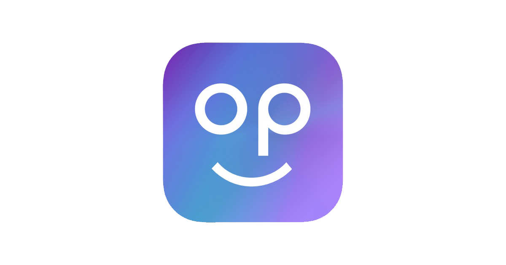

hi, i’m ellen.
I like people! And technology.
And using technology to make things (or vice versa). Things that look and feel delightful. And help people!
right now, i’m...
A fourth year student at Boston University studying Computer Engineering and Innovation & Entrepreneurship, concentrating in Technology Innovation and Machine Learning.
I’ve worked in roles across product management, design, and engineering at companies like Capital One, Popple, ReCo Digital, and Enlaye. And I’ve conducted research in labs including BU WISE Circuits Lab, Multimedia Communications Lab, and BU Robotics Lab, and with Prof. Brian Kulis.
I’m most passionate about human-computer interaction, autonomous systems, and machine learning. And I’m a big fan of the intersection of things: where technology, psychology, and design meet.
My top values are empathy, authenticity, and growth. I grew up in Beijing and NYC, and have also lived in Boston, Sydney, and DC.
when i’m not working, i’m...
Trying new restaurants, playing drums or guitar, hanging out with friends, out in nature, working on my next project, or on a gloriously epic adventure!
I LOVE new experiences and learning anything new. Everything from metalworking to skydiving, horseback riding to music production, boxing to meditation - I enjoy it all. Next on my list is bungee jumping.
In the last 6 months, I’ve visited 18 different workout studios in Boston. I also snowboard and play tennis and basketball (and am teaching my friends!)
I’ve traveled to 30+ countries so far - my goal is 100.
You should talk to me about...
Music, food, books (fiction, self-help, business, psychology, mystery), your favorite movies/TV shows, health/nutrition, love, technology, startups, AI, and design.
Fun fact: I’m ranked #5 on Beli at Boston University 😮
To quantify this magnificent accomplishment, that’s 1500+ restaurants rated!
P.S. If you don’t know what Beli is, download the app and find out ;)
ATV in Iceland!
Select Classes
- Product Management
- Business of Technology Innovation
- Strategy for Tech-Based Firms
- Design Strategy
- Advertising
- Engineering Design
- Software Engineering
- Algorithms and Data Structures
- Probability and Statistics
- Machine Learning
- Deep Learning
- Robot Learning
- Robotics and Autonomous Systems
- Smart and Connected Systems
- Engineering Mechanics
- Computer Architecture
- Computer Networking
Skills
Awards
- Dean’s List
- BU Robotics Lab — UROP Funding (2026)
- AWS YouthTech Conference @ BU — 2nd Place (2026)
- Microsoft AI Skills Fest (2025)
- Anthony Janetos Climate Action Prize — Boston University (2025)
- Hult Prize Campus Program — Top 5 North America (2025)
- Engineers Without Borders Cross-College Hackathon — 2nd Place (2025)
- Spark! Launch Lab — UX Standout Award (2024)
- The Dominique Lap Award — Awarded to “a creative and independent thinker in all areas related to technology” (2022)
Favorites (misc.)
- meditation, daydreaming, philosophical discourse, acting, psychology, espresso, ampersands, Rundown AI, dissonant harmonies, worldbuilding
- Universal Studios :)
- Barry’s Bootcamp
- Denmark, New Zealand, Iceland
- Deep Work, Think Again, The Right It, Zero to One, Design of Everyday Things, The Tipping Point, Stumbling on Happiness, Influence
- The Seven Husbands of Evelyn Hugo, The Collector, Her Name in the Sky, Educated, AI 2041, Broken Country, Great Big Beautiful Life, A Little Life, And Then There Were None
- Iron Man, He’s Just Not That Into You, Interstellar, Criminal Minds
- Geist
- star gazing!
featured work
some of my recent projects! email for more details :)
VitaSalus health app
Research, product strategy & UX/UI · Mobile app
Enlaye
Product design & user research · Mobile app, web app & website
Popple mobile app
UX design & user growth · Social & events app
Designathon mobile app
User research & prototyping · Mobile app
other projects
Capital One prefill logic
Product analytics & strategy · Credit card applications
Air quality web app
Information design & data visualization · Web app
ReCo Digital web app
Product development & data analytics · AI web app
Lovable hackathon mobile app
UX & navigation design · Mobile app
FlameFreeze wildfire hackathon
Front-end design & development · Website · 2nd of 30+ teams
VitaSalus
A health app that sits on top of the wearables you already own. Open it and it tells you where you stand on your goal, why, what to do in the next hour, and the one habit that would help most over time.
Home
Why
Goal
Check-in
Appointment
The five final screens. High-fidelity concepts built from my design system; names and health values are sample data. Click any screen to enlarge it.
- Role
- Solo: research, product strategy, UX/UI, the design system and the pitch
- Research
- 50+ customer discovery interviews, community listening, competitive and feasibility research
- Design
- A design system built in code, five high-fidelity screens, four rounds of iteration
- Result
- Won every category in my business class’s pitch competition, including Best Overall and Audience Choice
Key design decisions
- Home answers four questions and nothing else: where you are, why, what to do in the next hour, and what would help most long term.
- When devices disagree, the app shows both readings and a confidence number, since inaccurate data was the top complaint in my interviews.
- One action, one Start button, and its expected effect, so you know what to do now and can check later whether it worked.
- No cards and no green status color, so it doesn’t read as another dashboard and “good” never blends into the brand green.
01 · The problem
People who track their health have plenty of data and very little guidance.
The space was already crowded with Apple, Google, Oura, WHOOP, Garmin and dozens of AI coaches, so I didn’t design a single screen until I knew where it actually hurt. I ran 50+ customer discovery interviews, read complaint threads in the WHOOP, Oura, Garmin and Fitbit communities, and ranked what I heard by how often and how strongly it came up.
- Accuracy and reliability. For example, a bike ride counted as steps. After enough of that, people stop trusting the score.
- Pricing and value. Resentment about subscriptions and paywalls.
- Support. The most emotional complaints, mostly about service and replacements.
- No actionable insight. “Why is my recovery low, and what do I do about it?”
- Fragmentation. Goals, nutrition, training and labs live in different apps.
The obvious framing
“Health apps need better AI coaching and more metrics.”
My reframe
How might we help people who already own wearables trust their data and turn it into one clear next step, without making them anxious?
02 · Research
Every major device collects the data. Almost none tell you what to do with it.
I mapped hardware makers, the platform apps, third-party apps and AI coaches on two questions: does it work across devices, and does it end in a concrete next step? The upper right was empty. I also checked the regulations and API access for 10 platforms, which kept VitaSalus in the “general wellness” lane: it shows trends and never diagnoses.
- Device makers and single-purpose apps
- AI coaching layers
- VitaSalus
Qualitative and directional, based on my research.
Deciding what to build
An “anti-AI” accountability app
Simple streaks and commitments, with the AI hidden.
I kept: a calm, simple front end
A longevity aggregator
One place for the ring, glucose monitor, labs and smart bed people stack up.
I kept: the aggregator underneath
A “why” engine
Turns odd readings into small, timed tasks.
I kept: the main interaction
03 · Iteration
Four rounds of home, each fixing a problem I found in the last.
I reviewed every round as the person I’m designing for: an optimizer who already owns a wearable and is tired of digging for answers. One of them told me the four things they want to know when they open the app: where am I with my goal, why, what do I do in the next hour, and what would help most so this doesn’t happen again. They also said they ignore any chart that doesn’t show right away whether they’re succeeding or failing, or what to do next. That became my test for every screen: if it can’t answer those questions at a glance, it isn’t serving the person using it.
Round 1A nicer dashboard
Every piece sat in its own card, so it looked like every other health app.
Round 2A real brand system
No cards and gold only as a line, but still a score, a curve and two metrics to decode.
Round 3Four questions
Answers only the four questions. Clear, but flat, and it lost the trust signals.
Round 4FinalA ring that pulses
The bar became a ring you can read before any text.
Two calls I tested side by side
I couldn’t settle two things on one screen: should the ring run off the edge or sit centered, and should the action be a text link or a button? So I built all four combinations with identical content.
A1Off the edge · text link
Ruled out: the action gets lost in the text.
A2Off the edge · button
Kept.
B1Centered · text link
Ruled out: same problem as A1.
B2Centered · button
Kept.
The buttons stay, and “Add to plan” becomes “Start.” This is something to do today, and “Add to plan” made it sound like it could wait.
A2FinalistMore memorable
Breaks the frame like round 2. Shown in the final screens.
B2FinalistThe safer choice
More structured and easier to scan.
I’m keeping both finalists to test with users: which one people remember, and which one they act on faster.
Same information, easier to read
BeforeEvery number on every line
Accurate, but it took work to read.
AfterFinalA verdict, then ranked causes
Readable in seconds.
BeforeTwo thick bars
Heavy next to the thin lines everywhere else.
AfterFinalOne thin line, gap hatched
The gap is the reason to change the habit.
Labeling the causes
The Why screen lists what’s pulling your energy down (sleep, food, stress) and labels each one Big, Some or A little. I wasn’t sure about two things. First, should those labels be colored to match each cause’s line, or stay black? I built both, and the colored ones were faster to scan, so I dropped the black versions. Second, how should the cause names look? W3 uses regular title case, W4 uses all caps, and W5 reuses the label style from round 2: the name in capitals with a short note under it, like “SLEEP / SHORT LAST NIGHT.”
W3BackupTitle case
Easiest to read.
W4All caps
Not chosen: all-caps names, but the notes are still full sentences.
W5DefaultGutter labels
Matches the engraved gutter across the app.
Two smaller fixes
BeforeA 1–5 tap
AfterFinalA 0–10 slider
Same scale as home, which says “3 of 10.”
Before“Who’s it for?”
AfterFinalWritten from your calendar
The app already knows who you’re seeing next.
04 · The final screens
Each screen tells you where you stand, then why, then what to do.
Every screen in the app opens with a plain status line like “Running low” or “Behind,” so you know how you’re doing before you read anything else. The reason and the next step come after it.
01 · Home
“Running low.” ▼ 4
The gold arc shows your energy now (3), and the mark shows your usual for this hour (7). Comparing you to your own baseline makes the gap visible at a glance.
Below it is one action with a Start button and its expected effect (“lifts you ~2 pts within 30 min”), so you can check later whether it worked. The rings pulse faster when you’re strained and stay still with reduced motion.
02 · Why
“Mostly sleep. Partly food.”
Causes are ranked in plain words, and each label shares its line’s color so the two read as one.
When WHOOP and your phone disagree, the app shows both, says which it trusted, and lets you switch in one tap. Confidence is a number (88%) with the sources behind it.
03 · Goal
“Behind. 3 of 5 afternoons, you crashed.”
One thin line compares afternoon energy after late nights (4.9) with nights you’re asleep by 11 (7.4). The week marks use shape as well as color, so they work for color-blind users, and the screen ends on a commitment.
04 · Check-in
“How’s your energy?”
A 0–10 slider matches home. One spoken sentence becomes tags for caffeine, stress and mood, which captures how you feel with less effort than a form.
05 · Before an appointment
“Physical therapy, Thu 9:00.”
Written from your calendar for the person you’re seeing: one headline and three one-word verdicts a PT can read in under a minute. “Trends, not a diagnosis” keeps it a wellness product.
05 · The visual system
Inspired by lab instruments, but easy to read.
The screens borrow from lab readouts and instrument panels: thin lines, small monospace labels and exact numbers. The sentences stay plain, like “Running low” or “Mostly sleep,” so the data looks measured without being hard to read.
Layout
No cards. Content sits on the background with thin lines between rows, because a screen full of equal boxes reads as a dashboard, which is what my users are tired of.
The engraved gutter (above) is the signature element: a small caps label on the left and the value large on the right, based on lab readouts and engraved instrument plates.
Typography: three typefaces, one job each
Running low. 88%
You slept 5 h 40 and haven’t eaten since 9:00.
NEXT HOUR · 14:10 · DAY 214
Rejected: Fraunces (a craft bakery, not a clinic), Geist (a developer tool) and Figtree (a consumer fitness app). I chose Hanken Grotesk over Manrope after comparing x-height, cap height and digit width on the real screens.
Color: every color has one meaning
- Bone Background
- Verdant Buttons and controls
- Gold Brand accent, only as a line or mark
- Blue On track
- Coral Behind, and change arrows
- Amber Watch
No green status color. My first palette used green for the brand and for “good,” and you couldn’t tell them apart, so “on track” is blue, “behind” is coral and “watch” is amber.
Gold appears once per screen, as a line. Gold text gets a darker shade, because the brand gold only reaches 3.03:1 contrast and text needs 4.5:1; the darker gold reaches 4.71:1.
Motion: speed reflects the data
Running low. ▼ 4
3 of 10 now. You’re usually a 7 at this hour.
A sketch I coded for this page, not the app itself. Drag the slider: the arc follows your energy, the mark stays at your usual, and the rings pulse faster the further below usual you go. With reduced motion on, they stay still.
I built the design system in code (Next.js, React, Tailwind and shadcn), with every color, font and spacing value in one file for light and dark mode. Contrast is checked in both themes, and color is never the only signal.
06 · What’s next
I made a starting call on each open question. Now I want to test them.
| Question | Where I’m starting | What I’d test |
|---|---|---|
| Home: ring off the edge (A2) or centered (B2)? | Keeping both | Which one people remember, and which one they act on faster |
| Confidence as a number or in words? | A number (88%) | Which one people understand and trust more |
| Show the raw numbers behind the “why”? | Hidden, so it doesn’t become another dashboard | Whether users want them, or a “show the data” toggle |
| Cause names: gutter caps (W5) or title case (W3)? | W5, with W3 as backup | Which one people scan fastest. The amber “Some” also needs a darker shade for text contrast |
The first test is simple: can another optimizer open home and say where they are, why, and what to do within five seconds? After that, I want to know whether showing confidence and device disagreements actually makes people trust the app more.
Rules I took from iterating
- Open every screen with where the person stands, then why, then what to do.
- If a chart can’t show success or failure, or what to do next, at a glance, it goes. This came straight from an interview.
- Show disagreements and confidence in a form people can read in a second.
- Arrows, color and charts all have to earn their place.
How I used AI
I use AI to complement my thinking and work faster. For VitaSalus, Claude generated the first version of each screen from my design system and research, and I set the direction, reviewed every round and decided what changed next. I still prototype by hand: you can see my Figma work in Enlaye, Popple and the Designathon app. I believe a strong designer today pairs design intuition and research with the skill to use AI to get more done.
Prefill Data Orchestrator source selection
When you apply for a Capital One credit card, prefill fills in your information so you type less. I defined the logic for deciding which data source should fill each field.
Context: I interned on the Mainstreet Acquisitions team in the product management and analytics track. The Prefill Data Orchestrator (PDO) is a planned system that routes each field to the best available source, and my job was to define its business logic.
Skills: SQL (Snowflake), data profiling and segmentation, scoring model design, NPV and opportunity sizing, risk analysis, cross functional collaboration, executive communication.
Impact: Prefill is one of the highest return levers in card acquisition: the program has delivered $60M in annualized NPV over the last two years, and consolidating sources alone was a $10M to $20M opportunity. At Capital One’s application volume, small gains in completion mean tens of thousands of new accounts. My source hierarchy is informing the next phase of PDO implementation, and Phase 1 testing is rolling out with an expected 3 to 8% lift in application completion, projected at 40K to 100K incremental accounts and $9M to $25M NPV.
Problem
Every application entry point was hardwired to a single data source, but no one source is best for every field, customer segment, and entry point. That meant stale or incomplete prefills, more typing, and more applicants dropping off before finishing.
Process
- Frame. Broke the problem into what drives source quality: coverage, freshness, accuracy, and cost. I built the analysis plan around those four.
- Research. Profiled every source on those four drivers by field, entry point, and customer segment using SQL in Snowflake.
- Define. Turned the analysis into a ranked source hierarchy for each field.
- Design the system. Compared architecture options for how PDO should pick a source, and chose one.
- Test the case. Sized the NPV impact and evaluated the risks.
- Present. Worked with product, site, and business teams, and presented my findings and recommendations to a VP and a senior business director.
Decisions
- A scoring function, not a judgment call. I formalized the hierarchy as a scoring function, so ranking sources is systematic and can be rerun as the data changes.
- Two tiers with fallback. I recommended a two tier hierarchy with fallback and exception rules, so every field still gets filled when its best source is missing or out of date.
- Check identity before prefill. On my own initiative, I recommended identity verification prompts before prefill, tailored to each entry point, so we confirm it’s the right person before showing their personal information.
Enlaye
I was the first designer at Enlaye, an AI risk management platform for construction. I designed 9+ features across the mobile app, web app and website, and the customer demos built on my designs validated new features and brought in new customers.
- Role
- First designer. I built every prototype and flow from scratch, by myself, in Figma
- Research
- Customer interviews, a comparison of document management systems, requirements and PRDs
- Design
- 9+ features across mobile and web, including Enlaye’s first mobile AI feature, plus the company website and the brand identity
- Result
- Demos of my designs validated new features and led to onboarding new customers. Product development 2x faster
01 · The problem
Construction teams are buried in documents and issues.
A construction project produces huge contracts, drawings, change orders and safety issues, split between the office and the job site. Enlaye uses AI to flag risks in all of it. The people using it are busy project managers and field crews, so if a tool takes too long to learn or to use, it doesn’t get used. My job was to make Enlaye’s tools fast and clear, and consistent across mobile, web and the website.
02 · Process
From customer interviews to customer demos.
- Research. Watched customer interviews to understand our users’ pain points, and compared existing products before designing anything new.
- Define. Wrote user requirements and PRDs for each feature, and proposed new features based on what I heard in the interviews.
- Design. Built every prototype and flow from scratch, by myself, in Figma: wireframes to align the team, then fully interactive prototypes with variables, interactions and conditional flows.
- Justify. Presented my designs and met with the dev team and senior leadership to explain and defend my design decisions.
- Build and demo. Worked with the dev team to implement the designs in code, then demoed them to customers. Those demos validated demand for the new features and led to onboarding new customers. I also set up Figma-to-code workflows so engineers could build faster, and built some features myself in React and Next.js.
The screens and the thinking behind each feature are below.
Popple mobile app
I designed every screen in V2 and V3 of Popple, a social and events app for college students, and led its user growth.

- Role
- Joined as a SWE, moved into UI/UX design and user growth, and ended up as the only UX designer
- Research
- Engagement metrics, user interviews, user stories, A/B tests
- Design
- Every V2 and V3 screen in Figma, including 40+ mockups for V3
- Result
- 100 to 3,000+ users, 20% MoM growth, UX Standout Award (Spark! Launch Lab)
Popple was part of Innovation Pathway at BU, Spark! Launch Lab, Hult Prize Nationals, and MassChallenge.
01 · The problem
Finding events, and people to go with.
Students want to get involved in Boston and know what events are happening, but finding something worth going to, and people to go with, is harder than it should be. Retention was our biggest problem, so for V3 I focused on giving people a reason to come back to the app every day: discovery (finding events that fit you), a personalized feed, and onboarding that gets new users to that feed quickly.
The big debate: discoverability vs. searchability
“I know what I want.”
For people who already know what they want to attend, or what type of event. The goal is to surface those events as fast as possible.
In the app: search and filters
“Show me something.”
For people who don’t know what they want yet, or who open the app before they even plan to go to an event, and then come across something that looks interesting.
In the app: the scrolling home, picks and the feed
Our team went back and forth on which one to prioritize. Since retention was our biggest problem, discovery became the focus of V3, because it gives people a reason to open the app even when they aren’t looking for anything. Search and filters stayed at the top of the home screen for people who already know what they want.
02 · Process
From engagement data to every screen in the app.
- Research. Started with engagement metrics and user interviews, and turned the pain points into user stories, requirements and PRDs.
- Define. Planned the feature roadmap around discovery, the personalized feed and onboarding.
- Design. Designed every V2 and V3 screen myself in Figma, including 40+ mockups for V3, and brainstormed ideas before deciding what to build.
- Test and ship. Ran A/B tests to choose between options, and worked with the rest of the team to ship them.
03 · V2
V2 was built around the map and groups.
01 · Signing in
Sign in, sign up, or reset your password.
The screens before onboarding. People can sign in with their email or Google, create an account, or reset a forgotten password.
02 · Home, events and groups
Find an event, then find your group.
- Home put the map first, so you could see what’s happening around you.
- Event details is what you see when you tap into an event, with options to join or create a group.
- My groups shows the group you’re attending the event with.
- Chat: tap into a group to talk with the people you’re going with.
- Group details shows who’s in the group and what it’s about.
03 · Joining a group
“Event joined!”
Once you join a group to attend an event, a confirmation pops up with a shortcut straight to the group chat.
04 · Filters
For people who know what they want.
The searchability side of our debate. Filters narrow events by category, date, and how many people are going, so someone looking for something specific gets to it fast.
04 · Exploring ideas
What would people want to see before they decide to go?
Before V3, I brainstormed what information would help someone decide to attend an event. We weren’t trying to show all of these cards. These were ideas to test and choose from.
01 · Event stats
Who’s going, at a glance.
On the left, statistics for one event: who’s interested, by school, relationship status and gender, so you have an idea of the type of people going. On the right, the rest of the screen: people you may know who are going, people in your major, people with similar interests, hot topics, photos from the venue, and similar events.
02 · Event details and the home feed
Stats, reviews and a feed of cards.
- Left: experimenting with showing the stats right on the event details page.
- Middle: showing reviews of an event when the venue hosts it regularly.
- Right: a home feed with different types of cards, from interactive ones like polls to photo galleries, recommended events and recommended profiles, plus reviews on home.
05 · V3
A new homepage, and an app that learns your taste.
01 · Home
Two directions for a new home.
For a complete revamp of our original homepage, we explored two variations.
Left: a cleaner, TikTok-style home. You scroll through events and find a group that’s going to each one.
Right: keeps the map view from V2. When you pull up the bottom bar, events are shown in decks of cards by category, like “BU students are attending,” and you can scroll through events category by category.
In both, each event shows friends interested, the share of BU students and singles, and how many groups are going, so you know who’ll be there before you decide.
02 · Reviews
“How was the event?”
A way for people to review events they went to. You rate it, tag what you enjoyed most (food, atmosphere, staff, location), write about your experience, and add photos.
03 · Taste Map
A map of every event you’ve been to.
Taste Map was another idea to build retention and make the app stickier. It gives someone a history of all the events they’ve been to and their memories from each one. Over time, it shows the kinds of events and places they like, which helps us personalize their future recommendations.
04 · Data visualizations
Weekend picks and Popple DNA.
Left: weekend picks, based on the types of events someone has liked before. Right: an experiment with a Popple DNA page, where people can see statistics about the events they’ve been to.
05 · Onboarding
Collecting the data the visualizations need.
The more data-heavy features needed to know who someone is. Event stats, for example, show who’s interested by school, relationship status and gender. So onboarding asks for that up front: school, graduation year, gender, interests, relationship status, major, and how they heard about us. Each question gets its own screen with a progress bar.
06 · Result
From 100 to 3,000+ users.
I led user growth from 100 to 3,000+ users with 20% month over month growth. The new discovery features and personalized feed raised daily active users by 15%, and Popple won the UX Standout Award at Spark! Launch Lab.
Air quality web app
A public web app that turns continuous sensor data from BU classrooms into clear answers for facilities staff: which rooms are poorly ventilated, too hot or too cold, or exposed to particulates.
Context: As one of three undergraduate researchers in BU’s Multimedia Communications Lab, I helped deploy sensors that measure CO2, particulates, temperature, humidity, and occupancy in classrooms. I designed the web app and the sensor enclosures. Our partner and main user was BU Operations.
Skills: Streamlit, Python, Plotly, Matplotlib, CAD, stakeholder interviews, information design, data visualization.
Impact: Gave BU Operations evidence they could act on: rooms that need more ventilation, rooms where heating and cooling could save energy, and rooms that need air filtering. The project won the Anthony Janetos Climate Action Prize.
Problem
Raw readings from sensors in 20+ classrooms are unreadable to a facilities team. They don’t need more data; they need to know which rooms to fix.
Process
- Define the user. Started from who would use it: facilities staff who need to decide what to fix, not researchers exploring data.
- Research. Met with Operations to learn the questions they ask about their buildings.
- Design. Turned those questions into the app’s controls and charts, built it in Streamlit with Plotly and Matplotlib, and published it so Operations could use it directly.
- Hardware. Designed the sensor enclosures in CAD so the devices could be mounted in classrooms.
Design decisions
- Controls that match their questions. A custom date range, a metric picker, and comparing many sensors at once came straight from what Operations asked in our meetings.
- Thresholds on every chart. Every reading is plotted against health and comfort thresholds, so a chart answers “is this a problem?” without needing to know what a CO2 reading in ppm means.
- Exposure, not averages. Summary metrics are time above threshold, time occupied, maximum exposure, and time occupied and above threshold, since a bad reading in an empty room matters less than one during class.
For the data pipeline, database design, and findings, see the research version of this project.
Project media
ReCo Digital web app
A web app that reads receipts and turns them into food waste data for a client.
Context: ReCo Digital is a design and strategy consulting firm. I was one of two interns in charge of a sustainability project for a client. Our objective was to automate the quantification of food waste through receipt image recognition.
Skills: Python, computer vision, OpenAI API, Gemini API, data analytics, data visualization, web development, Flask, Supabase.
Impact: Delivered solution to client in 4 weeks, achieved 98% accuracy in receipt parsing, improved client’s operational efficiency, reduced page load times by 40%.
Problem
To measure food waste, the client needed an input-to-waste ratio: how much food came in versus how much was thrown out. The “input” side was stuck on paper receipts, and turning those into numbers by hand was slow.
Process
- Own it. Led product development and managed the project from choosing the technology to testing and deployment.
- Research. Tested several LLM APIs and computer vision models on receipts and compared accuracy and speed before choosing a stack.
- Scope. Evaluated feature tradeoffs and used prioritization frameworks to decide what fit in 4 weeks.
- Build. Built the pipeline: Gemini reads each receipt, OpenAI sorts every item into one of 12 food groups and totals the weight by group, and Supabase (PostgreSQL) stores the results.
- Iterate. Built the dashboard in Flask, JavaScript and CSS, presented it to the client, and kept iterating on their feedback.
Design decisions
- Reading and sorting as separate steps. Splitting the work between two models made it easier to see where errors came from and fix each step on its own.
- 12 food groups. Detailed enough to show where waste comes from, small enough to stay readable on a chart.
- Single and bulk upload. One receipt for a quick check, or a whole batch at once, because the client collects receipts over time and shouldn’t have to upload them one by one.
- A monthly view, so the client sees totals and trends over time instead of receipt by receipt.
Designathon mobile app
Meet artscape - where the show never really ends!
Mobile app design for Catalyst Designathon 2026.
Context: Formed a team with two strangers to participate in a nationwide virtual designathon. Ideated solutions and created high fidelity prototype with Figma.
artscape is an event-centered platform where fans can relive live experiences, discover local creatives, and connect with others who were there. Unlike existing social platforms, everything is organized around the event itself, giving fans a place to preserve their memories and giving creatives a way to turn their work into real opportunities.
Skills: Figma, user research, wireframing, user experience design.
Impact: Created complete app flow, curated full app experience, and collaborated to make pitch video all in one day.
Problem
Our track was “After the Fact.” For all three of us, the clearest example was concerts: the show ends, everyone goes home, and the memories end up scattered across apps that weren’t built to hold them. Instagram is too broad, TikTok is driven by the algorithm, VSCO has no community or event layer, and Reddit is unstructured with no way for creatives to get paid. One of us is a freelance graphic designer who makes art for local shows, and the fans who were there almost never see it.
Process
- Define. Started from our own experiences and boiled them down to three questions: How can I preserve this memory? What can I do with it? Who can I connect with because of it?
- Research. Compared Instagram, TikTok, VSCO and Reddit, and talked to people who fit our two personas: fans who go to live events often, and creatives who make work at events. Fans wanted to find people who share their taste. Creatives wanted their work seen in context.
- Prioritize. Scored six features on impact, feasibility, reach and fit with our concept, and used the scores to set the scope of the prototype.
- Design. Explored layouts with wireframes and AI prototypes, then built the full flow, a component library and screen transitions in Figma.
- Pitch. Explained our design decisions in a written proposal and a pitch video. Working virtually with two people I’d never met, we had to be deliberate about writing decisions down.
| Feature | Impact | Feasibility | Reach | Fit | Total |
|---|---|---|---|---|---|
| Event archive | 3 | 3 | 3 | 3 | 12 |
| Community forum | 2 | 2 | 3 | 3 | 10 |
| Profile / portfolio | 3 | 3 | 1 | 3 | 10 |
| Search and filters | 3 | 3 | 2 | 2 | 10 |
| Messaging | 3 | 1 | 1 | 2 | 7 |
| Map view | 1 | 1 | 2 | 2 | 6 |
The event archive scored highest, so it became the core of the app. Next came a community space for each event, creative profiles that work as portfolios, and search with genre filters. Messaging and the map scored lowest, so we left them for later.
Design decisions
01 · Opening the app
Two kinds of users, two paths. Fans pick a few genres and go straight in. Organizers and creatives take a separate path (“I’m an organizer or creative”) that asks what they create, so fans never see questions that don’t apply to them.
A comma in the logo. The “a” holds a comma, a reminder to pause and reflect after the show. The app stays in dark mode to feel like a concert, with purple and yellow standing out against it to pull attention where it matters.
02 · Discovering a show
Organized around the event. Instagram and TikTok organize content around people and algorithms. artscape organizes it around the show, so you can find everyone who was there and see the night through their eyes.
Tabs so fans and creatives don’t compete. This was our hardest problem. One shared feed would bury creative work under casual fan posts, but a fully separate creative section would make the app harder to navigate. Tabs on each event page give creatives’ work its own space and keep capsules personal, all from the same entry point.
03 · Memory capsules
Capsules are a diary first. Photos, a short reflection and feeling tags for one event. Each capsule can stay private or be shared, because some memories are just for you.
04 · Creators
A cycle that pays creatives. Fans add memories, creatives get seen and get commissions, and organizers get an archive that markets their next event. The commission inbox shows the item, price and show on each request, with accept, decline and message right on the card.
What’s next: an interactive map of the events you’ve been to, a commission marketplace with pricing tiers, capsules that several fans can make together, and tools for venues to embed artscape archives on their own event pages.
View project on Devpost →
Watch demo video →
Try Figma prototype →
Lovable hackathon mobile app
Vibe-coded complete mobile app using Lovable in under 1.5 hours (frontend + backend).
Context: Invited to participate in a Lovable collegiate hackathon where we vibe coded entire web and mobile apps.
Skills: Lovable, information hierarchy, UX design, navigation design.
Impact: Learned to prioritize features and speed-run MVP development under extreme time pressure.
About the app: A health intelligence layer that connects all your health data and wearable devices. Solves the problem of fragmented data, incomplete insights, and users' frustration of not understanding the why behind outcomes. Vita uncovers true causation and provides personalized and actionable insights, helping you achieve your goals faster and smarter.
Process
- Define. Wrote down the problem and user pain points first: data spread across devices, insights that stop short, and not knowing why things happen.
- Prioritize. Picked the must-have features from those pain points and cut everything else.
- Plan. Mapped out the navigation, information hierarchy, layouts, user flow, theme and how to show the data before writing a single prompt.
- Build and iterate. Built the MVP in Lovable, then spent the rest of the time iterating on it, balancing how much the product does against how much fits on a phone screen.
Design decisions
- Goals at the top. Home opens with your goals and how on track you are (“Run a Marathon, 34% on track”), so every number below has a reason to be there.
- A body you can read before the numbers. The 3D body view marks each region as optimal, attention or warning, so you can see what needs care at a glance.
- Every insight ends in an action. Each card has a plain-language finding, one suggestion (“Consider a noon cutoff”), a confidence score, a chart of the two things that move together, and a cited study. That answers the “why” and gives people a reason to trust it.
- Logging is one tap from anywhere. A single center button opens journal, meal photo, face scan and file upload, so adding data never means hunting through menus.
In the process, I learned how to communicate large amounts of data in intuitive ways. This hackathon is also where the idea for VitaSalus started. Looking back, this version shows a lot at once, and that’s what I worked on cutting down there.
App screens
FlameFreeze
A wildfire response website for LA residents, community members and emergency responders. I designed and built the whole site in one weekend, and it was the main reason our team placed 2nd out of 30+ teams.
- Role
- Website design and build, solo, on a team of five
- Users
- LA residents, community members and emergency responders
- Built with
- Next.js, TypeScript, Tailwind, Three.js, Recharts, Mapbox and AI coding tools
- Result
- 2nd place out of 30+ teams and 170+ participants
Key design decisions
- One question per page: each page answers what one group of users needs to know, from “Am I in danger?” to “How will this fire spread?”
- The most urgent information comes first: the fire danger banner sits above everything else, and live status comes before any explanation.
- A working site instead of mockups, because maps, live status and a simulation only make sense when you can use them.
- Plain language and familiar names, like neighborhoods people know, so residents can read the site without any training.
01 · The challenge
LA’s fire systems ran out of water and time.
After the January 2025 LA fires, our team of five entered Engineers Without Borders’ Design Corner. During the Palisades Fire, water demand was four times what the hydrants were built for, elevated tanks ran dry within hours, and Santa Ana gusts above 60 mph carried embers into unburned areas. Narrow, hilly roads also slowed evacuation and kept fire engines out.
Our answer was FlameFreeze, a system that responds on its own: Google’s FireSat satellites spot fires early, sprinklers on hilltops run on stormwater and groundwater, drones track the wind, and air purifiers switch on when smoke rolls in. My teammates developed the system and the pitch. My job was the website, which had to turn a concept into something people could see and use.
02 · Who it’s for
Three groups, each with a different question.
- Residents: “Am I in danger, and what should I do?” They need the risk level and the next step, fast, without learning how the system works.
- Community members: “How can I help my neighborhood?” Fire wardens, HOAs and neighbors need a way to organize, train and stay informed.
- Emergency responders: “Where is the fire, what’s nearby, and how will it spread?” They need live status at a glance and a way to test scenarios before they happen.
I designed the site as a product for these people, not as a demo for the judges. Every page had to answer one of their questions.
03 · Approach
Features first, then straight into code.
With one weekend, I skipped mockups. I started from what each group needed, turned those needs into features, grouped the features into pages, and then built the site page by page.
- “Am I in danger?” A danger banner, status cards and fire risk by neighborhood, on the Dashboard.
- “Where is the fire?” Active incidents, resource status and a live map, on Live Monitoring.
- “How will it spread?” Weather and water pressure controls, plus a model of the air purifier, on Simulation.
- “How can I help?” The fire warden program, alerts, learning resources and a forum, on Community.
- “How does this work?” The system explained in three stages, on System.
Designing straight in code fit this project. Maps, live status and a simulation are hard to judge in a static mockup, and a working site shows how the system behaves, not just how it looks. I filled it with dummy data and simulations so every page feels real.
I used AI coding tools to build quickly. The features, the page structure and the design decisions on this page are mine.
04 · The site
The most urgent information always comes first.
01 · Dashboard
Status before story.
A red banner sits at the very top, above even the hero, because a fire warning matters more than anything else on the page. You can dismiss it once you’ve read it.
Four status cards answer “is the system ready?” at a glance: water storage, sensors, active alerts and system status. Each has its own icon and color, so you can scan them without reading.
From there, the dashboard sends each group where it needs to go: shortcuts to monitoring and simulation for responders, and a sign-up card for residents.
02 · Fire risk by area
Neighborhoods people recognize.
Residents think in neighborhoods, not coordinates, so fire risk is a bar chart of named areas like Mandeville Canyon and Laurel Canyon on one 0 to 100 scale. You can find your area and compare it to the rest in a few seconds.
All the bars are the same orange, so the eye compares heights, not colors.
03 · Live monitoring
Built for a responder’s glance.
Responders scan for status, so each line holds one thing, its state and its time. Incidents show severity as a large red percentage. Resources show a colored badge, Responding or Onsite, with an ETA.
These panels sit beside a live map of fires, trucks and sprinklers, and the legend uses the same names as the lists so the two read together.
04 · Simulation
Let responders test “what if.”
The simulation is for emergency responders. Controls for temperature, humidity, wind speed, wind direction and water pressure let them see how conditions change the response before a fire happens.
The air purifier view labels every part, from the sensors to the HEPA and carbon filter, and can split into an exploded view. People can understand hardware they’ll never open, and the labels can be hidden once they know it.
05 · System
The system without the jargon.
The system has a lot of moving parts, so I split it into stages that read top to bottom: what it senses (satellites, sensors, weather), how it decides (AI models and risk assessment) and how it responds (sprinklers, NotifyLA alerts and dispatch).
Each part gets an icon, a name and one line. Color groups the stages: orange for sensing, yellow for analysis, green for data and red for the response.
06 · Community
One place for everything a neighbor can do.
The fire warden program, alerts, learning resources and a forum sit under tabs on one page, so community members don’t have to hunt across the site.
Every tab follows the same pattern: what it is, what’s involved, and one clear action like Apply Now or Register for Alerts.
Visual system
Orange is the brand, taken from fire, and it carries the header, the hero and the main buttons. Red is saved for danger: the warning banner, active incidents and the response stage. Content sits in white cards with soft shadows on a light gray background, which keeps a lot of information separated and easy to scan.
05 · Result
2nd place out of 30+ teams.
The judges were very impressed by the site, and it was the main reason we placed 2nd out of 30+ teams and 170+ participants. A working product made our system feel real in a way a poster couldn’t.
06 · What I’d improve
What I’d change with more than a weekend.
- Test with real users. I’d put the dashboard in front of residents and responders and check that each group can answer its question within a few seconds.
- Label the demo data. Every number is dummy data. I’d mark it clearly so no one mistakes it for real readings.
- Sliders that show their value. The middle labels on the simulation sliders are fixed, so temperature can read 30°C over a 20°C label. I’d label only the ends and show the live value.
- A sprinkler view that tells a story. It opens as an empty grid. I’d show the fire and the spray coverage right away.
- A flow diagram that flows. Arrows between the stages would show the order, not just the groups.
- One color for actions. “Join Now” is blue while the rest of the brand is orange. I’d use one color for every main button.
- Mobile polish. On phones, the dashboard shows two menus and the simulation buttons run off the screen.
Team materials
The concept the site was built on.
Our team’s poster and concept visuals for the FlameFreeze system.
research
research & projects from class & labs.
Vision-Based Haptic Navigation
BU Robotics Lab · ROS 2 · monocular depth · haptics
Agent Failure in Multi-Robot Reinforcement Learning
Boston University · MARL · PyTorch · multi-robot
other projects
EMG Controlled Assistive Glove
Senior Design · EMG · LDA · Raspberry Pi
Imitation Learning for Autonomous Driving
EC518 Robot Learning · PyTorch · CARLA · DAgger
Amyloid PET Centiloid Prediction
MedAI Hackathon · PyTorch · 3D CNNs · vision transformers
Performance Analysis for vLLM Inference
Team Watchdog · vLLM · GuideLLM · LLM serving
Continuous Indoor Air Quality Assessment
Multimedia Communications Lab · IoT · MongoDB · Streamlit
Vision-Based Haptic Navigation
A safety system for remotely driven robots. It estimates how far away obstacles are using only the robot’s camera, limits the robot’s speed as it gets close, and pushes back on the driver’s handheld controller (a haptic stylus) so they can feel the warning.
Context: When people drive a robot remotely through a camera feed, it’s hard to judge distance, which leads to collisions. Haptic feedback, a force the driver feels through their controller, can warn them, but prior haptic systems relied on knowing the robot’s surroundings in advance from a map or motion capture. I tested whether a single ordinary camera could measure distance accurately enough to replace that, since common depth sensors struggle with transparent or reflective surfaces (infrared) or are too big and expensive for small robots (LiDAR). I’m advised by Prof. Roberto Tron and Dr. Dawei Zhang, and presented this work at the BU UROP Symposium in October 2026.
Skills: ROS 2, Python, C++, monocular depth estimation (ZoeDepth), control barrier functions, haptic feedback, Geomagic Touch, AgileX LIMO robot.
Impact: Showed that one ordinary camera can measure distance accurately enough to run a haptic safety system: after my calibration fix, its typical error is 2.3 cm, small compared to the 30 cm safety margin. That means this kind of driver assistance doesn’t need a map of the room made in advance, motion capture, or an expensive depth sensor, so it could work on small, inexpensive robots in places that haven’t been mapped.
Details:
- Built the system end to end in ROS 2: depth estimates from the camera feed a safety filter that limits the robot’s speed, and any correction is sent to the stylus as a force.
- Compared three depth models, chose ZoeDepth because it outputs distances in meters, and stopped the obstacle detection from locking onto the floor.
- Found a hidden calibration error by checking against a tape measure at 7 distances across the full 0.3 to 1.5 m range, and cut the typical depth error from 18.7 cm to 2.3 cm (about 8x).
- Implemented the safety filter as a direct formula so it runs at 20 Hz, with a timeout that stops the robot if commands stop arriving.
- Fixed 3 bugs in the haptic device’s C++ driver that dropped force commands or allowed unsafe forces, plus a unit mismatch (mm vs. m) in my code.
- Ran a pilot test to set the force level: 0.8 N was clearly felt but easy to override, while 0.5 N or less was too weak.
- Tested in stages (synthetic inputs, then recorded data, then a person on the stylus) and caught two safety hazards before hardware testing: the robot now moves only while the driver holds a button, and stops when the program exits.
How it works
Select a dashed box to see what that part does, why it matters, and what I did. Red arrows show the correction sent back to the driver.
Try the safety filter
Drag the sliders to change the distance to the box and the speed the driver asks for. The safety filter sets a speed limit that gets lower as the robot nears the 30 cm margin and reaches zero at the margin. If the driver asks for more than the limit, the robot only gets the limit, and the stylus pushes back harder the bigger the difference.
The calibration bug
ZoeDepth predicts depth from a single image, but its raw output has to be calibrated to real distances. I first fit the calibration against the robot’s IR sensor, and it looked accurate. When I checked it against a tape measure from 0.3 to 1.5 m, the error followed a curve instead of being random: about 15 cm too far at 0.5 m and 39 cm too close at 1.5 m. Two things had hidden this: the IR sensor reads straight through clear objects, and my first check only went out to 0.77 m. Switching to a quadratic calibration brought the error down to 2.3 cm RMSE.
Next: So far this has run on recorded camera data with a real person on the stylus. Next is testing on the live robot, and letting it steer around obstacles instead of only braking.
EMG Controlled Assistive Glove for Stroke Rehabilitation
A soft robotic glove that closes a weak hand when forearm muscle signals (EMG) show the user is trying to grip. I proposed the project and own the calibration that keeps it working each time the glove goes back on.
Context: About 40% of stroke survivors have lasting loss of arm and hand function, and many could keep improving at home. EMG controlled devices exist but mostly stay in the clinic: they cost $33,000+ and need someone to recalibrate them. Published classifiers reach about 95% accuracy only when the electrodes go on exactly the same way every session, and shifting them 1 cm can cut accuracy by about 25%. On a glove that moves your own fingers, a wrong guess is an unwanted squeeze.
Skills: Requirements engineering, weighted tradeoff studies, EMG pattern recognition (LDA), Python on Raspberry Pi, literature and patent review, IEC/ISO safety standards, UI design, team leadership.
Impact: Reframed the project from gesture accuracy, which is largely solved, to staying reliable after the glove is taken off and put back on, the barrier that keeps these devices out of homes. The team adopted the success metrics I proposed: accuracy the next day (75% or higher after a 60 s check, with no full retraining) and unintended activations at rest. The project is in the design phase, with testing in spring 2027.
Details:
- Proposed the project and was the first lead of the 6 person team (Sep to Oct 2026), running meetings and design reviews through requirements and the Critical Design Review. Secured a faculty advisor in biosignal processing.
- Ran weighted tradeoff studies across 6 application areas and 4 device designs. Switched the target from post surgical therapy to stroke once the course required actuation, since grip assist only makes sense for weakness that persists.
- Own the session manager. Each session it loads the user’s model, records 5 s of rest, cues 4 gestures with the glove off, adapts the model, and checks electrode placement. I found the original calibration took 65 s against a 60 s limit and fixed the timing before building.
- Chose to update only the classifier’s class means: the model has 160 mean values but 528 covariance values, and calibration gives only about 190 independent windows of data.
- Turned design review feedback into new safety requirements, including a 50 ms overforce cutoff, safe behavior on power loss and controller crash, and a mechanical stop on each tendon.
Choosing a calibration method
| Method | Score | Result |
|---|---|---|
| Update class means from 5 reps | 4.10 | Picked |
| Scale features to today’s resting baseline | 3.85 | Picked, run together with the update |
| Train with simulated electrode shift | 3.80 | Higher implementation risk |
| Pretrain on public EMG data | 3.15 | Weakest on accuracy and risk |
| Retrain fully every session | out | Can’t fit in 60 s |
| Reuse yesterday’s model unchanged | control | Loses about 27% across days; kept as the test baseline |
Weighted on next day accuracy 35%, calibration time 25%, implementation risk 20%, compute on the Pi 10%, and patent clearance 10%.
How a session runs
Operator screens
Next: Experts told us the original plan (custom glove, EMG board, safety controller, EEG) was too much at once, so we cut it to an existing glove, one therapy exercise, and a phone app. I now own calibration and the app. This fall I’m testing the calibration options offline on Ninapro DB6, a public EMG dataset recorded across days, before live tests with the glove.
Agent Failure in Multi-Robot Reinforcement Learning
When one robot in a team freezes mid-task, do the others cope? I’m testing whether the way a team is trained, with a shared “coach” or with each robot learning alone, makes it more fragile to losing a teammate.
Context: Most multi-agent reinforcement learning (MARL) assumes the team never changes, but real robots break, lose power, or drop off the network. I compare two standard training methods that differ in one thing. In MAPPO, a shared critic (a “coach” that scores actions) sees the whole team during training. In IPPO, each robot learns alone. Once deployed, both act only on their own sensors. My hypothesis is that the shared coach makes robots lean on each other, so MAPPO teams cope worse when one fails. I’m advised by Prof. Brian Kulis and aiming for a workshop paper by spring 2027.
Skills: Python, PyTorch, multi-agent RL (MAPPO, IPPO, PPO), BenchMARL, TorchRL, VMAS, Weights & Biases, GPU cluster jobs (BU SCC), experimental design, statistics (Welch’s t-test, Fisher’s method).
Impact: Trained 60+ policies and found that the answer depends on the task. When each robot has its own goal, a frozen teammate cuts success by up to 7 points, and MAPPO adapts about 35% worse than IPPO, replicated with 3 and 6 robots (combined p ≈ 0.012). When robots share a map to cover, a failure costs both methods about a quarter of the team’s output and they don’t differ. MAPPO is the default for robot teams, so this shows when its extra fragility matters.
Details:
- Set up every comparison to isolate one cause: the methods differ only in the critic, every robot takes a turn failing on the same starting layouts, and results are checked against a team trained one robot smaller and a hand-coded controller.
- Measured success from robot positions instead of reward, after noticing the simulator’s finishing bonus requires every robot to arrive, which would punish every failure.
- Locked the statistical test after the 3 robot results, so the 6 robot run counted as a true replication.
- In the shared task, raw numbers made the methods look different, but MAPPO’s team started weaker (68.9 vs. 80.5). Comparing each run to its own no-failure score made the difference disappear.
- Got a third task to train after it barely beat random, by adding reward shaping and random start points to the simulator.
- Built the GPU training pipeline on BU’s cluster from scratch, and presented the project in a 40 minute talk to the research group.
Same failure, two tasks
Navigation tests whether survivors get thrown off. Sampling, where robots collect value by covering a map, tests whether they make up a lost teammate’s share.
| Navigation | Sampling | |
|---|---|---|
| Cost of a frozen robot | Up to 7 points of success | About 25% of team output |
| vs. a team trained one robot smaller | Still a gap on reachable goals | Matches it |
| MAPPO vs. IPPO | MAPPO about 35% worse (p ≈ 0.012) | No difference (p ≥ 0.32) |
Simulation, 5 seeds per method. Navigation with teams of 3 and 6, Sampling with 3.
So MAPPO’s extra fragility shows up where a frozen teammate gets in the others’ way, not where survivors just keep doing their own job. Matching the smaller team is an outcome, though, not proof that survivors reacted to the failure. That’s the next thing I’m testing.
Is it the robot or the geometry?
When a robot froze, survivors reached their goals up to 7 points less often. Before calling it an adaptation failure, I asked whether the task had become impossible: a robot frozen on top of someone’s goal blocks it for any controller. I added a check for that, plus a hand-coded controller as a reference. Two-thirds of the drop was blocked goals. The other third was real: the hand-coded controller reached nearly every reachable goal, and the learned robots didn’t. That remainder is the actual finding, and it’s where MAPPO and IPPO differ.
Next: Finish a third task, and compare survivors’ paths with the identical no-failure episode to see whether they actually react. Then train with random failures and a signal for which teammates are still active, aimed at closing the navigation gap, and eventually test on the lab’s physical LIMO robots.
Imitation Learning for Autonomous Driving in CARLA
I built an imitation learning pipeline that trains a CNN to drive from camera images in the CARLA simulator, then ran controlled experiments to find which design choices actually make it drive better.
Context: Imitation learning trains a policy by copying an expert, and it’s how many robots and driving systems get their first policy. Its weakness is distribution shift: the network only sees states the expert visited, so one small mistake puts it somewhere it never trained on, and errors compound. Behavior cloning’s cost can grow quadratically with the task length, while DAgger, which trains on the learner’s own states, keeps it linear. I proved this bound for the course, then tested what helps in closed loop driving, not just on a validation set.
Skills: Python, PyTorch, CNNs, imitation learning (behavior cloning, DAgger), CARLA, experiment design, data cleaning, GPU cluster jobs (BU SCC).
Impact: Showed that offline metrics often don’t predict driving: the model with the best braking recall scored 0 because it never moved. The final model, trained on one town, still drove in a town it had never seen.
Details:
- Collected and cleaned 18,325 expert driving frames, adding recovery examples by nudging the steering and letting the expert correct it, and fixed a label leak in those frames.
- Built a CNN with 4.5M parameters that maps a camera frame to a driving action, and rewrote the loss after finding training stuck at exactly 2.6309 from softmax saturation.
- Implemented DAgger with a queryable expert and tracked on-policy loss across iterations.
- Ran 10+ experiments that each changed one variable, measured offline with per-class recall (85% of frames are “straight”) and in closed loop driving, with top models rerun across 3 traffic seeds.
- Ran CARLA headless on BU’s GPU cluster and built evaluation tools, including seeded traffic and frame by frame contact sheets for failure analysis.
What I tested
| Change | Score | What happened |
|---|---|---|
| Speed as an input | 60 | Strongest single model |
| Class weights in the loss | 0 | Brake recall rose to 0.95, but the car never moved |
| Stacking 2 frames | 36.5 | No vehicle contact, but left the lane |
| Dropout 0.3 | 36 | Closed the overfitting gap, but hit two cars from behind |
| Braking earlier (p > 0.3) | 60 → 36 | Two contacts instead of one |
| DAgger, 3 iterations | 60, 58.8, 36 | No improvement with three short iterations |
| A separate head per navigation command (final) | 10.27 | Mean over 3 seeds on 4 routes in a town it never trained on |
CARLA driving score: route completion times an infraction penalty. Scores are on a route in the training town unless noted.
What I learned: Most failures were about timing, not perception. Frame by frame review showed the top models finishing the route but hitting a stopped motorcycle from behind, and the obvious fix, braking earlier, doubled the collisions instead of preventing them.
Amyloid PET Centiloid Prediction
At BU’s first MedAI Hackathon, my team built models that predict how much amyloid, a hallmark of Alzheimer’s, is in a brain from its 3D PET scan. I built the two models in our final ensemble, which had the lowest test error of the 12 teams in our track.
Context: The hackathon drew 230+ registrants and 30 teams across 3 tracks, each built on real, de-identified data from a BU research group. Teams formed and saw the challenges Friday evening, then had Saturday to build before judging. Our track asked for the Centiloid score, the standard scale Alzheimer’s research uses for amyloid burden, from preprocessed amyloid PET scans. The scans came from 4 radiotracers (FBP, FBB, NAV, and PIB), and each one shows the same amount of amyloid differently, so the core difficulty was the domain shift between tracers. NAV was rare, only 68 of the 2,000 training scans. We also had 500 validation scans, each a 128 × 128 × 128 volume, and judges ranked teams on a held-out test set by running each team’s predict.sh on its submitted checkpoint. Strong solutions could be included in a publishable research paper.
My role: I built the modeling side: the tracer-conditioned 3D ResNet-18, the Swin Transformer, the training script, and the ensemble prediction we submitted. Teammates built the shared data pipeline and augmentation, and explored a CycleGAN that makes a scan from one tracer look like another.
Skills: Python, PyTorch, 3D CNNs, vision transformers, conditioning for domain shift (FiLM), ensembling, test-time augmentation, medical imaging, GPU cluster jobs (BU SCC).
Impact: Lowest test error of the 12 teams in the track: a mean absolute error of 12.5 Centiloid, 56% below the 28.1 baseline.
Held-out test leaderboard
Mean absolute error in Centiloid units on the judges’ held-out test set. Lower is better. The baseline scored 19.8 on validation but 28.1 on test, so the test set was much harder than validation suggested.
Details:
- Built on the provided starter codebase instead of replacing it, so our checkpoints stayed compatible with the judges’
predict.sh. I changedmodel.py,losses.py,train.py, andpredict.py, and addedpredict_ensemble.py. - Main model: a 3D ResNet-18 with FiLM (feature-wise linear modulation) conditioned on tracer type, which scales and shifts the network’s features for each radiotracer so one model can adapt to all four.
- Second model: a 3D Swin Transformer (a Swin UNETR encoder plus a tracer embedding), a very different architecture from the ResNet.
- Trained both with AdamW, a cosine annealing learning rate schedule, Huber loss (δ = 10), data augmentation, fixed seeds, and early stopping. Huber loss acts like squared error for small misses and like absolute error for big ones, so the few scans with very high Centiloid values don’t dominate training.
- Used test-time augmentation at inference.
- Submitted an ensemble of the ResNet and the Swin Transformer. Different architectures make partly uncorrelated errors, so with limited time I chose a second architecture over extra seeds of the same one.
- Trained on BU’s Shared Computing Cluster with one NVIDIA L40S (48 GB), 8 CPU cores, and 64 GB of RAM, in a virtualenv because conda wasn’t allowed.
Training setup
| 3D ResNet-18 + FiLM | 3D Swin Transformer | |
|---|---|---|
| Role | Main model | Second model in the ensemble |
| Batch size | 4 | 2, since it needs more memory |
| Learning rate | 1e-4 | 5e-5 |
| Shared | AdamW, cosine annealing, Huber loss (δ = 10), augmentation, fixed seeds, early stopping, test-time augmentation | |
The ResNet trained for up to 80 epochs with early stopping patience of 15.
Performance Analysis for vLLM Inference
A reproducible benchmarking framework for large language model serving. It runs controlled workloads against a vLLM server and measures latency and throughput, so that two configurations of the same model can be compared directly.
In plain terms: a way to tell whether a change to how an AI model is served made it faster or slower, before users notice.
Context: As LLMs move into production, inference systems have to meet latency, throughput, and cost targets while running at scale on GPUs. Unlike functional failures, performance regressions usually happen silently. They raise cost and make the experience worse without triggering any alert. Our track asked how optimizations compound on Red Hat AI’s quantized Qwen models, and answering that needs baselines you can trust and comparisons where only one thing changes.
Skills: vLLM, GuideLLM, LLM inference and serving, FP8 quantization, benchmark design, latency and throughput analysis, Python, data visualization.
Impact: Established reproducible baselines for RedHatAI/Qwen3-8B-FP8-dynamic on chat and code workloads, including about 974 output tokens per second at concurrency 32 on chat, and a repeatable process for checking whether a configuration change helps or hurts.
Method
GuideLLM generates the workload against a vLLM server. Each benchmark varies prompt length, output length, and concurrency, while the model, hardware, and workload stay fixed across runs. Because configuration is the only variable, a difference in the metrics reflects a real performance change.
- Run a baseline benchmark.
- Change one configuration, such as batching, quantization, or decoding.
- Re-run the same workload.
- Compare the TTFT distributions and throughput against the baseline.
Metrics
| Metric | What it measures |
|---|---|
| Time to first token (TTFT) | Latency: how long a user waits before the response starts |
| Output tokens per second | Decoding efficiency |
| Requests per second | Throughput: how much traffic the server handles |
Every run uses the same model, hardware, and workload, so only the configuration differs.
Results: FP8 Qwen3-8B
| Chat | Code | |
|---|---|---|
| Prompt / output tokens | 128 / 128 | 512 / 1024 |
| Concurrency | 32 | 8 |
| Requests per second | ~7.5 | ~0.3 |
| Output tokens per second | ~974 | ~254 |
| Time to first token | ~850 ms | ~781 ms |
Model: RedHatAI/Qwen3-8B-FP8-dynamic. The results show the expected scaling: higher concurrency raises throughput and also raises latency.
Scope and limitations: The framework provides reproducible benchmarking, structured metrics, and baseline performance numbers. Regression detection is shown through manual comparison of benchmark outputs and plots. Automated regression detection, Prometheus-based observability, CI/CD integration, and automated root-cause analysis are the next steps.
Takeaway: Controlled, reproducible benchmarking makes the performance of an LLM inference system measurable and comparable, which is the foundation for catching regressions and improving reliability in production.
Continuous Indoor Air Quality Assessment for BU Buildings
Continuous time series sensing of CO2, PM2.5, temperature, humidity, and occupancy for each room of a campus building, with a data pipeline, time series database, and analytics portal for evaluating ventilation, thermal comfort, and particulate exposure.
In plain terms: a sensor network that shows facilities staff which classrooms need better ventilation, heating and cooling changes, or air filtering.
Context: Campus buildings had no continuous data on air quality or comfort for each room, so facilities couldn’t tell whether classrooms were ventilated enough, too hot or too cold, or exposing people to particulates. Our goal was to collect CO2, PM2.5, temperature, humidity, and occupancy data in each room, give facilities evidence to act on, and show people in the room their air quality. I was one of three undergraduate researchers, advised by Prof. Thomas Little, funded by the BU Institute for Global Sustainability with BU Sustainability and the Office of Research, and working with BU Operations as our facilities partner.
Skills: Python (NumPy, Pandas), time series data pipelines, MongoDB schema design, Streamlit, Plotly, Matplotlib, CAD, IoT sensor deployment, data cleaning, exposure metric design.
Impact: Gave BU facilities data for each room showing which classrooms need more ventilation, which are too warm or too cold and wasting energy, and which need air filtering. The project won the Anthony Janetos Climate Action Prize, and we presented it at the IGS Month of Energy and Sustainability in March 2025.
System: As a team, we installed sensors in 20+ classrooms across the EPIC building on March 7, 2025. Readings travel over the campus network to a lab server for logging, then to the Streamlit portal for analysis and to live gauge displays for people in the room.
Details:
- Designed the sensor enclosures in CAD so the devices could be mounted and deployed in classrooms.
- Built a Python pipeline (NumPy, Pandas) that ingests, cleans, and analyzes the sensor streams, to study how occupancy, airflow, and building systems affect air quality and energy use.
- Designed a MongoDB schema with two collections, optimized for querying time series data, and automated data collection.
- Built the public Streamlit portal, which queries the lab server and plots readings against health and comfort thresholds for any date range, metric, and set of sensors.
- Designed the metrics it reports, including time above threshold and time occupied and above threshold, which measures how long people were actually exposed.
- Worked with the team across hardware and software, and with BU Operations as the end user.
For how the portal was designed around its users, see the design version of this project.
What the data showed
- CO2: levels on the 2nd floor pointed to insufficient ventilation, and CO2 from one class often wasn’t cleared before the next class or even the next day.
- Temperature: several classrooms ran above the comfort range while others were over chilled, two separate chances to save energy.
- PM2.5: rooms 201-1, 201-2, and 102 had episodic particulate spikes, making them candidates for local air filtering.
Sensor hardware
Next: When I finished in May 2025, the project was moving toward measuring how long people are exposed to hazards, adding VOC sensors, and presenting results to BU Operations.
resume
Need the password? Email me at ellenz@bu.edu.